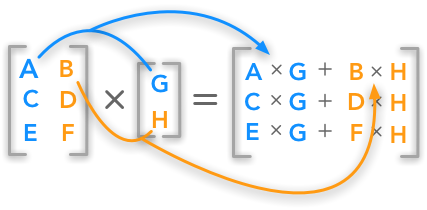
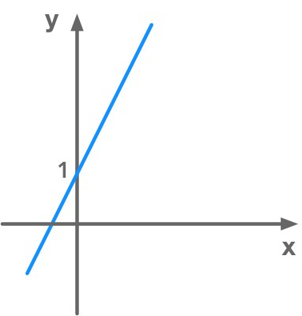
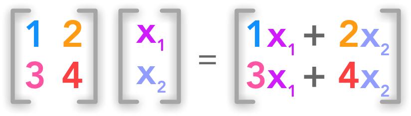

2.2 Multiplying Matrices and Vectors#
We will see some very important concepts in this chapter. The dot product is used in every equation explaining data science algorithms so it’s worth the effort to understand it. Then we will see some properties of this operation. Finally, we will to get some intuition on the link between matrices and systems of linear equations.
import numpy as np
Show code cell source
# Avoid inaccurate floating values (for inverse matrices in dot product for instance)
# See https://stackoverflow.com/questions/24537791/numpy-matrix-inversion-rounding-errors
np.set_printoptions(suppress=True)
The standard way to multiply matrices is not to multiply each element of one with each elements of the other (this is the element-wise product) but to calculate the sum of the products between rows and columns. The matrix product, also called dot product, is calculated as following:

The dot product between a matrix and a vector
The number of columns of the first matrix must be equal to the number of rows of the second matrix. Thus, if the dimensions, or the shape of the first matrix, is (\(m \times n\)) the second matrix need to be of shape (\(n \times x\)). The resulting matrix will have the shape (\(m \times x\)).
Example 1.#
As a starter we will see the multiplication of a matrix and a vector.
with \( \bs{A}= \begin{bmatrix} 1 & 2\\\\ 3 & 4\\\\ 5 & 6 \end{bmatrix} \) and \(\bs{b}=\begin{bmatrix} 2\\\\ 4 \end{bmatrix}\). We saw that the formula is the following:
So we will have:
It is a good habit to check the dimensions of the matrix so see what is going on. We can see in this example that the shape of \(\bs{A}\) is (\(3 \times 2\)) and the shape of \(\bs{b}\) is (\(2 \times 1\)). So the dimensions of \(\bs{C}\) are (\(3 \times 1\)).
With Numpy#
The Numpy function dot() can be used to compute the matrix product (or dot product). Let’s try to reproduce the last exemple:
A = np.array([[1, 2], [3, 4], [5, 6]])
A
array([[1, 2],
[3, 4],
[5, 6]])
B = np.array([[2], [4]])
B
array([[2],
[4]])
C = np.dot(A, B)
C
array([[10],
[22],
[34]])
It is equivalent to use the method dot() of Numpy arrays:
C = A.dot(B)
C
array([[10],
[22],
[34]])
And also with @ operator:
C = A @ B
C
array([[10],
[22],
[34]])
Example 2.#
Multiplication of two matrices.
with:
and:
So we have:
Let’s check the result with Numpy:
A = np.array([[1, 2, 3], [4, 5, 6], [7, 8, 9], [10, 11, 12]])
A
array([[ 1, 2, 3],
[ 4, 5, 6],
[ 7, 8, 9],
[10, 11, 12]])
B = np.array([[2, 7], [1, 2], [3, 6]])
B
array([[2, 7],
[1, 2],
[3, 6]])
C = A.dot(B)
C
array([[ 13, 29],
[ 31, 74],
[ 49, 119],
[ 67, 164]])
It works!
Formalization of the dot product#
You can find more examples about the dot product here.
Properties of the dot product#
We will now see some interesting properties of the matrix multiplication. It will become useful as we move forward in the chapters. Using simple examples for each property will provide a way to check them while we get used to the Numpy functions.
Matrices mutliplication is distributive#
Example 3.#
is equivalent to
A = np.array([[2, 3], [1, 4], [7, 6]])
A
array([[2, 3],
[1, 4],
[7, 6]])
B = np.array([[5], [2]])
B
array([[5],
[2]])
C = np.array([[4], [3]])
C
array([[4],
[3]])
\(\bs{A}(\bs{B}+\bs{C})\):
D = A.dot(B+C)
D
array([[33],
[29],
[93]])
is equivalent to \(\bs{AB}+\bs{AC}\):
D = A.dot(B) + A.dot(C)
D
array([[33],
[29],
[93]])
Matrices mutliplication is associative#
A = np.array([[2, 3], [1, 4], [7, 6]])
A
array([[2, 3],
[1, 4],
[7, 6]])
B = np.array([[5, 3], [2, 2]])
B
array([[5, 3],
[2, 2]])
\(\bs{A}(\bs{BC})\):
D = A.dot(B.dot(C))
D
array([[100],
[ 85],
[287]])
is equivalent to \((\bs{AB})\bs{C}\):
D = (A.dot(B)).dot(C)
D
array([[100],
[ 85],
[287]])
Matrix multiplication is not commutative#
A = np.array([[2, 3], [6, 5]])
A
array([[2, 3],
[6, 5]])
B = np.array([[5, 3], [2, 2]])
B
array([[5, 3],
[2, 2]])
\(\bs{AB}\):
AB = np.dot(A, B)
AB
array([[16, 12],
[40, 28]])
is different from \(\bs{BA}\):
BA = np.dot(B, A)
BA
array([[28, 30],
[16, 16]])
However vector multiplication is commutative#
x = np.array([[2], [6]])
x
array([[2],
[6]])
y = np.array([[5], [2]])
y
array([[5],
[2]])
\(\bs{x^\text{T}y}\):
x_ty = x.T.dot(y)
x_ty
array([[22]])
is equivalent to \(\bs{y^\text{T}x}\):
y_tx = y.T.dot(x)
y_tx
array([[22]])
Simplification of the matrix product#
A = np.array([[2, 3], [1, 4], [7, 6]])
A
array([[2, 3],
[1, 4],
[7, 6]])
B = np.array([[5, 3], [2, 2]])
B
array([[5, 3],
[2, 2]])
\((\bs{AB})^{\text{T}}\):
AB_t = A.dot(B).T
AB_t
array([[16, 13, 47],
[12, 11, 33]])
is equivalent to \(\bs{B}^\text{T}\bs{A}^\text{T}\):
B_tA = B.T.dot(A.T)
B_tA
array([[16, 13, 47],
[12, 11, 33]])
System of linear equations#
This is an important part of why linear algebra can be very useful to solve variety of problems. Here we will see that it can be use to represent system of equations.
A system of equations is a set of multiple equations (at least 1). For instance we could have:
A system of equations is defined by its number of equations and its number of unknowns. In our example above, the system has 2 equations and 2 unknowns (\(x\) and \(y\)). In addition we call this a system of linear equations because each equations is linear. It is easy to see that in 2 dimensions: we will have one straight line per equation and the dimensions are the unknowns. Here is the plot of the first one:

Representation of a linear equation
In our system of equations, the unknowns are the dimensions and the number of equations is the number of lines (in 2D) or $n$-dimensional planes.Using matrices to describe the system#
Matrices can be used to describe a system of linear equations of the form \(\bs{Ax}=\bs{b}\). Here is such a system:
The unknowns (what we want to find to solve the system) are the variables \(x_1\) and \(x_2\) corresponding to the previous variables \(x\) and \(y\). It is exactly the same form as with the last example but with all the variables on the same side. \(y = 2x + 1\) becomes \(-2x + y = 1\) with \(x\) corresponding to \(x_1\) and \(y\) corresponding to \(x_2\). We will have \(n\) unknowns and \(m\) equations.
The variables are named \(x_1, x_2, \cdots, x_n\) by convention because we will see that it can be summarised in the vector \(\bs{x}\).
Left hand side#
The left hand term can considered as the product of a matrix \(\bs{A}\) containing weights for each variable (\(n\) columns) and each equation (\(m\) rows):
with a vector \(\bs{x}\) containing the \(n\) unknowns
The dot product of \(\bs{A}\) and \(\bs{x}\) gives a set of equations. Here is a simple example:

Matrix form of a system of linear equations
We have a set of two equations with two unknowns. So the number of rows of \(\bs{A}\) gives the number of equations and the number of columns gives the number of unknowns.
Both sides#
The equation system can be wrote like that:
Or simply:
Example 4.#
We will try to convert the common form of a linear equation \(y=ax+b\) to the matrix form. If we want to keep the previous notation we will have instead:
Don’t confuse the variable \(x_1\) and \(x_2\) with the vector \(\bs{x}\). This vector contains actually all the variables of our equations. Here we have:
In this example we will use the following equation:
In order to end up with this system when we multiply \(\bs{A}\) and \(\bs{x}\) we need \(\bs{A}\) to be a matrix containing the weights of each variable. The weight of \(x_1\) is \(2\) and the weights of \(x_2\) is \(-1\):
So we have
To complete the equation we have
which gives
This system of equations is thus very simple and contains only 1 equation (\(\bs{A}\) has 1 row) and 2 variables (\(\bs{A}\) has 2 columns).
To summarise, \(\bs{A}\) will be the matrix of dimensions \(m\times n\) containing scalars multiplying these variables (here \(x_1\) is multiplied by 2 and \(x_2\) by -1). The vector \(\bs{x}\) contains the variables \(x_1\) and \(x_2\). And the right hand term is the constant \(\bs{b}\):
We can write this system
We will see at the end of the next chapter that this compact way of writing sets of linear equations can be very usefull. It provides actually a way to solve the equations.